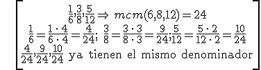

Para comparar, sumar o restar fracciones necesitamos que las fracciones tengan el mismo denominador.
Para reducir a común denominador, buscamos las fracciones equivalentes que tengan denominador común (el mínimo común múltiplo de los denominadores).
Por ejemplo:

\[\begin{align} & \frac{1}{6},\frac{3}{8},\frac{5}{12}\Rightarrow \,mcm(6,8,12)=24 \\ & \frac{1}{6}=\frac{1\,\cdot \,4}{6\,\cdot \,4}=\frac{4}{24};\quad \frac{3}{8}=\frac{3\,\cdot \,3}{8\,\cdot \,3}=\frac{9}{24};\frac{5}{12}=\frac{5\,\cdot \,2}{12\,\cdot \,2}=\frac{10}{24} \\ & \frac{4}{24},\frac{9}{24},\frac{10}{24}\quad \text{ya tienen el mismo denominador} \\ \end{align}\]